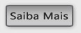
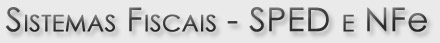

|
A partir de uma auditoria, identificamos e recuperamos, no âmbito administrativo, valores de INSS eventualmente pagos a maior. De forma precisa, identificamos e recuperamos os impostos e contribuições federais feitas a maior, como: PIS, COFINS, CSLL e Imposto de Renda. Desde a implantação, passando pela consultoria e o fornecimento de um dos softwares mais importantes do mercado, somos pioneiros no desenvolvimento dos sistemas fiscais SPED e NFe. Fazemos parte do Grupo TOTVS - a maior empresa brasileira de software do Brasil. |
||